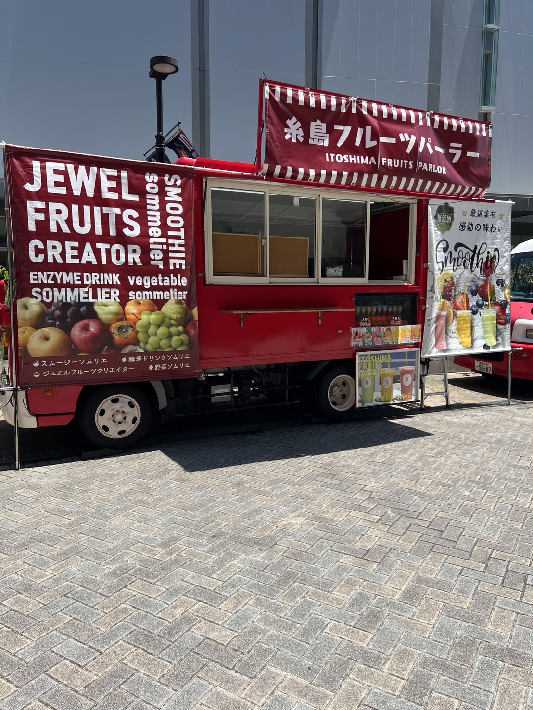
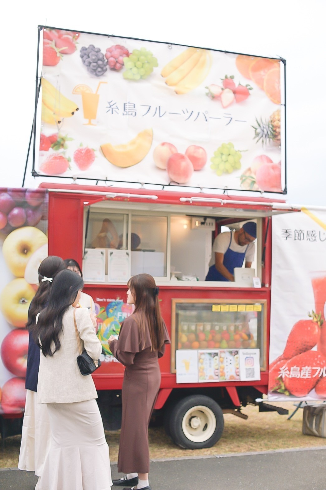
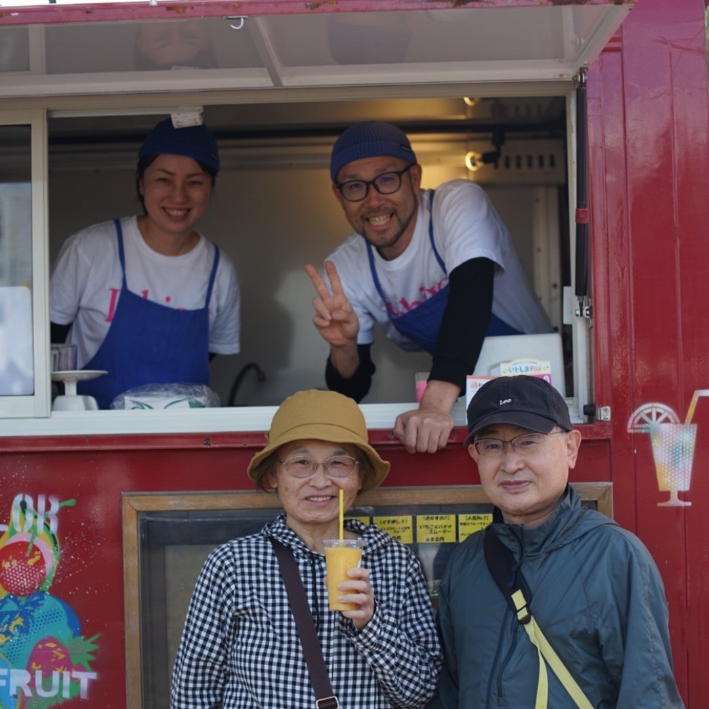
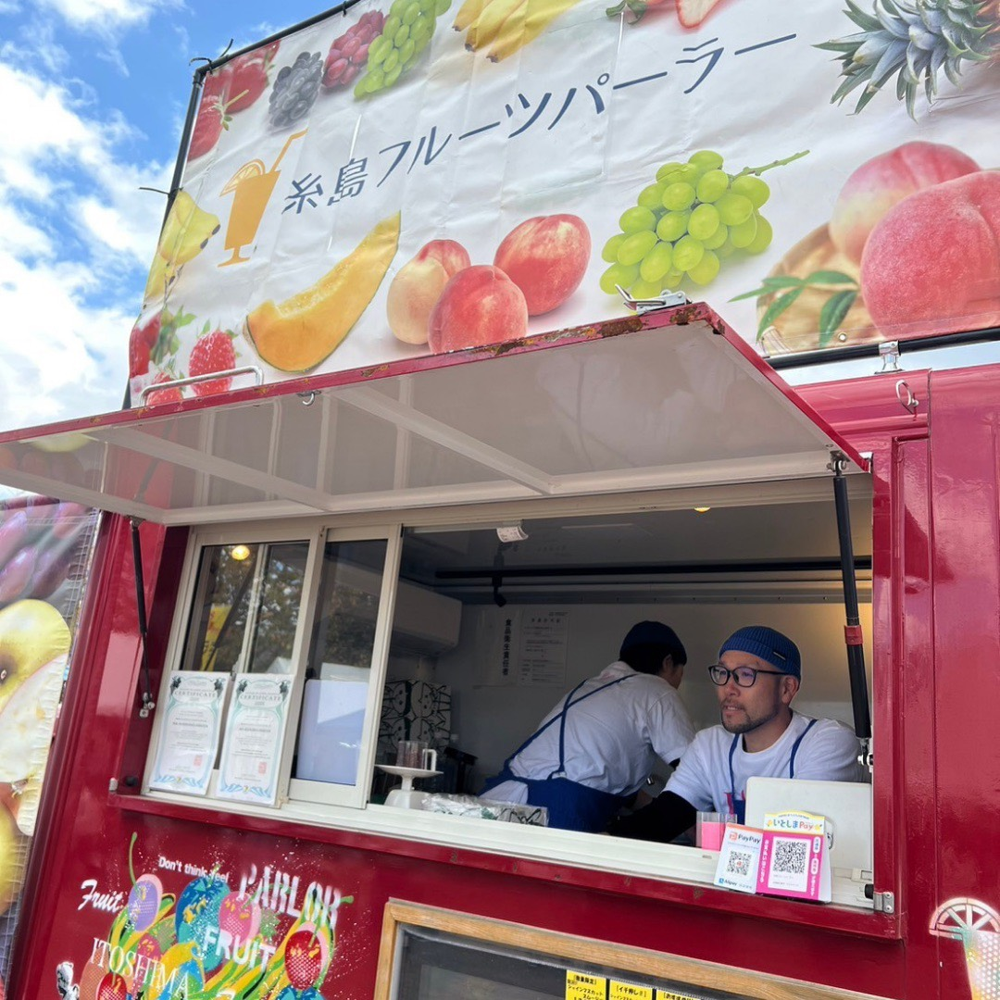
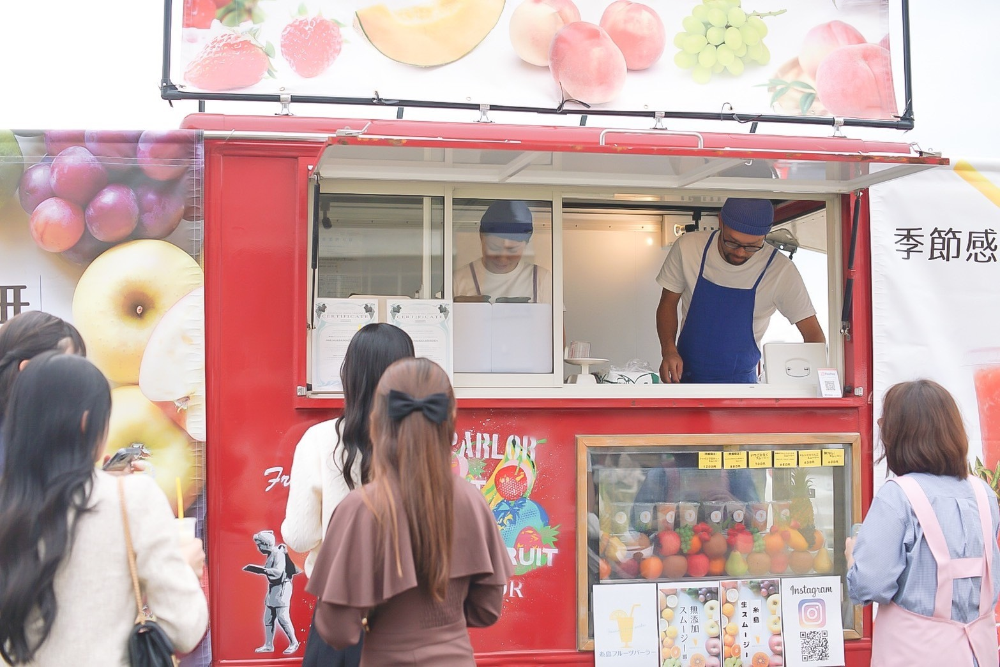
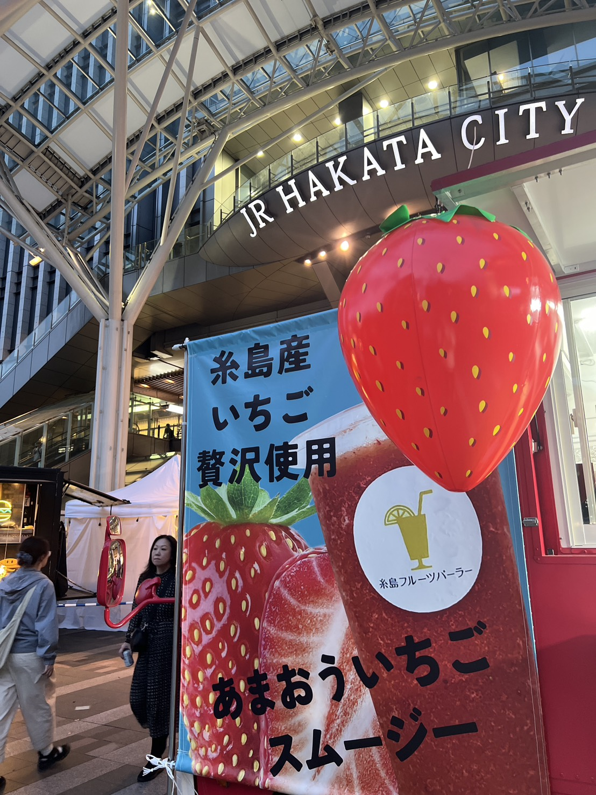

社是
全ては『誠』あるのみ。
経営理念
農業を中心に据え
世界を牽引する農業と事業を創る

会社情報
| 屋号 | 糸島フルーツパーラー |
|---|---|
| 代表 | 塩田 久美子 |
| 創業 | 2021年5月 |
| 所在地 |
〒819-1583 福岡県糸島市三雲135-2 |
| 適格請求書発行事業者 登録番号 |
T1810851609657 |
Business
事業内容
私たちは福岡県糸島市に本拠を置き、キッチンカー事業を行う傍ら米農家としてお米作りにも取り組んでいます。
キッチンカー経営
旬のフルーツを使った無添加生スムージーを各地のイベントでお届けします。季節感じるおもてなしをモットーに、お客様に笑顔をお届けしています。
キッチンカー開業支援
これからキッチンカーを始めたい方へ、開業のノウハウをお伝えします。車両の選び方から営業許可の取得まで、トータルでサポートいたします。
レシピ・教育のコンサルティング
スムージーのレシピ開発や飲食店向けの教育支援を行っています。オリジナルメニューの開発もお手伝いいたします。
お米作り
糸島の豊かな自然の中で、丹精込めてお米を育てています。農業を中心に据えた事業展開で、地域に貢献しています。
お米の卸および販売
自家栽培のお米を卸売・小売で販売しています。糸島の恵みを全国にお届けします。




